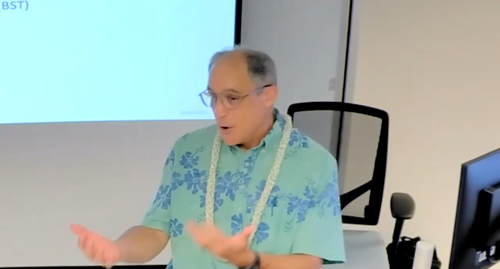

On August 30th, 2023, Mr. Costa from Business Solution Technologies gave a talk about the crucial skills that are needed for effective communication and collaboration in a team-driven environment. Among the many things that Mr. Costa spoke about, although they’re arguably all equally important, there were two points that immediately stood out the most to me.
“Comment your code” is something that everyone tells you, and I’ve always been partially conflicted in how to go about commenting on my code. In some cases, the function of the code is clear to me, and little to no commenting is required. In other cases, I realize that the code may be complicated as it was confusing for myself, so commenting on that bit of code is probably a good idea. In all these scenarios, I am only thinking about commenting for myself. And this is completely fine – but, when you’re working with a team, it’s no longer about you.
Mr. Costa spent a good deal of time talking about the importance of documentation and encouraged the “liberal use of comments in code.” It’s not only to help remind you of what you did, but also why you did that, and likewise allows team members who take after your code to quickly and clearly understand your thinking process.
It’s even more important when you’re talking about multi-year development of software where developers come and go. Mr. Costa explicitly mentioned NASA as an example, where launching a spacecraft can take the work of hundreds of people over the span of 10 years or longer before it bears fruit. It might be bothersome to spend half your time writing documentation instead of writing code, but the initial time investment that forces clear documentation is worthwhile in the long term when code frequently changes hands and grows larger and more complex over time.
Mr. Costa emphasized the importance of allowing everyone the opportunity to speak and not being judgemental – “that’s part of collaborating and teamwork.” When you are brainstorming ideas, you shouldn’t be afraid to bring up ideas or outright refuse ideas that may seem like “bad ideas.” I’m always worried about saying something wrong that I’ll keep the idea in my mind and eventually forget about it. Mr. Costa recommends to just “get it off your chest.” Who knows, it could be useful in the future, or it might even be applicable to the current situation.
And, at the end when you’re trying to reach a conclusion, you should try to come to a consensus with everyone’s ideas whenever possible, since you want teams to be working towards a common goal. It’s not about winning over each other, but being able to develop and deliver the project for the company or for a customer. If teams are not aligned in this goal, then they’re more likely to be less successful than teams who come together from the get-go.
As an ICS 314 student, this talk was certainly a valuable learning experience. I learned the importance of not only commenting for yourself, but commenting for (basically) the world, and how you should be open to everyone’s ideas and come to a common consensus once you’re trying to reach a conclusion. This talk opened my eyes to how crucial effective communication and collaboration is in a team-driven environment.
Mr. Costa has over 35 years of business operations and information technology experience with private businesses and government organizations in the State of Hawaii. Mr. Costa is currently the Director of Education Solutions at Business Solution Technologies, Inc. (BST), a Hawaii business, and technology consulting firm. BST focuses on providing business-driven technology solutions in the areas of Human Resources, Health and Human Services, Education, and Government services.
Beyond the Classroom: Exploring Tech in the Real World</br> Watch the Talk (Google Drive)